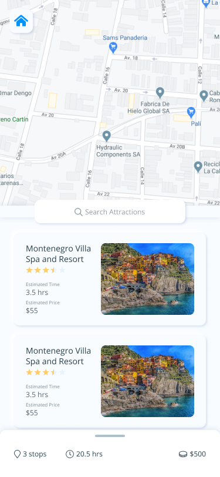
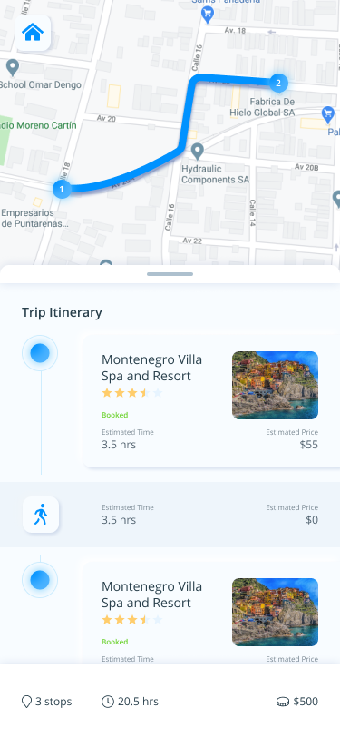
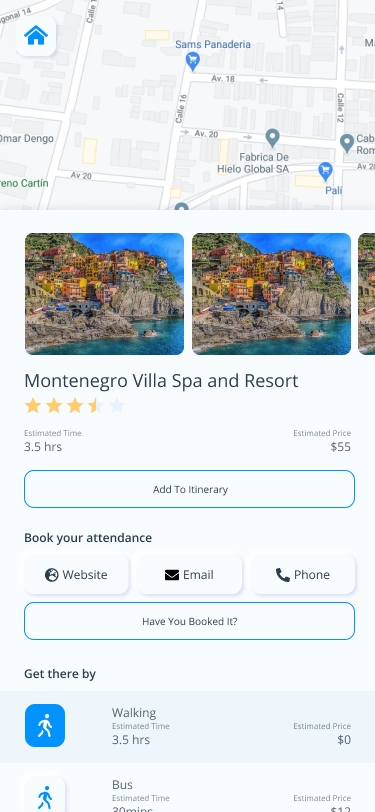

For the most part, I wanted to make this composition clean and simple; although I employed a trending visually skeuomorphic style to keep the interface contemporary and to also push my design experience. On each screen I kept the map visible asPit is the most important part in maintaining context for the user in there planning experience.
  